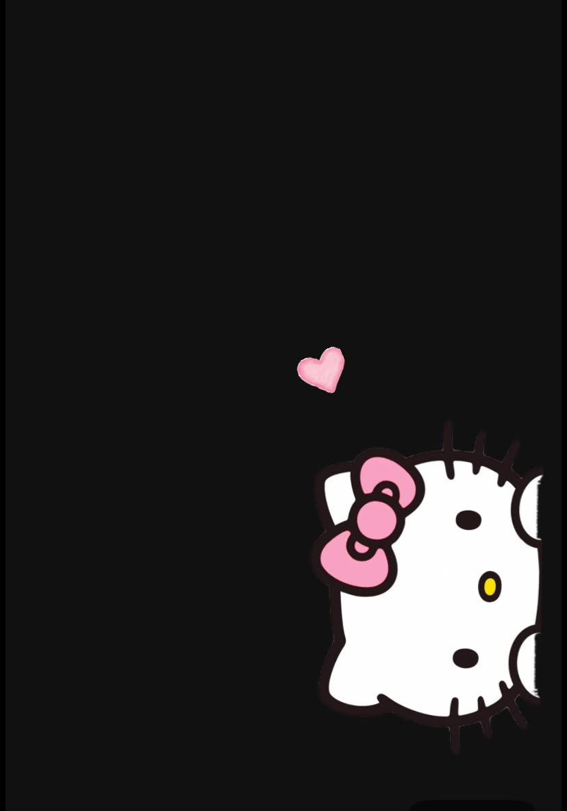

Holiii, mi amor. ♡
Tengo full sin escribirte una carta sin motivo, y hoy simplemente me dieron ganas de hacerlo. No porque haya una fecha que celebrar ni porque necesite una razón especial, sino porque a veces siento tantas cosas bonitas por ti que no quiero dejar que se queden guardadas. Quiero que puedas leerlas, volver a ellas y recordar siempre lo importante que eres para mí💗💗💗.
Amor, esta carta es para decirte, una vez más, lo muchísimo que te amo, lo feliz que me haces sentir y lo enamorada que estoy de ti. Quizás no te lo he dicho con todas las letras, o quizás no te lo he repetido lo suficiente, pero eres el amor de mi vida. Eres esa persona que llegó a mi corazón y encontró un lugar que ahora lleva tu nombre. Me encanta tenerte en mi vida, compartir mis días contigo y saber que, entre tantas personas en el mundo, tengo la dicha de amarte a ti.💗
Gracias por quedarte, por elegirme y por amarme tan bonito. Gracias por cada gesto, cada palabra, cada abrazo, cada risa y por todas esas pequeñas cosas que quizás para ti parecen sencillas, pero que para mí significan muchísimo. Me haces sentir querida, especial y afortunada. Eres un novio maravilloso y estoy demasiado orgullosa de la persona que eres, de lo que sueñas, de lo que haces y de todo lo que todavía estás construyendo. Quiero verte cumplir tus metas, celebrar tus logros y acompañarte también en los días en los que las cosas no salgan como esperabas.💗
Quiero que sepas que puedes contar conmigo. No solamente cuando todo esté bien, cuando tengamos motivos para reír o cuando la vida se sienta fácil, sino también cuando estés cansado, preocupado, frustrado o cuando necesites un poquito de paz. Quiero ser tu apoyo, tu compañera y esa persona con la que puedas bajar la guardia. No tengo que tener todas las respuestas para estar a tu lado; muchas veces bastará con escucharte, abrazarte y recordarte que no tienes que poder con todo tú solo.💗
Hahahah, y mira que antes me daba miedo mostrarte mi lado intenso, cursi y vulnerable. Ahora ya no quiero esconderlo. Contigo me nace ser así: decirte que te extraño, que quiero mimos, que me haces falta, que me encanta hablar contigo y que podría pasar horas demostrándote cariño. Tienes una parte enorme de mi corazón, Kely, y quiero que conozcas todas mis versiones: la dulce, la sensible, la que se ríe por cualquier tontería, la que se pone sentimental y hasta la que a veces no sabe cómo explicar lo que siente.💗Gracias por hacerme sentir que puedo ser yo, sin tener que fingir que siento menos de lo que realmente siento.
No quiero que confundas mis ganas de crecer contigo con la idea de que tengo que dejar de ser quien soy. Quiero seguir aprendiendo, madurando y convirtiéndome en una mejor versión de mí misma, así como deseo verte crecer y convertirte en todo lo que sueñas. Quiero que construyamos una relación en la que los dos podamos sentirnos amados, escuchados, respetados y seguros; donde podamos hablar de lo que nos duele, celebrar lo que nos hace felices y recordar que estamos del mismo lado. Quiero cuidarte y también aprender a dejarme cuidar por ti.💗
Prometo seguir poniendo amor, paciencia y dedicación en lo nuestro. Prometo apoyarte en tus proyectos, creer en ti incluso en los días en que dudes de ti mismo y hacerte sentir lo valioso que eres. También quiero que sigamos teniendo detalles, conversaciones largas, bromas tontas, momentos espontáneos y recuerdos que algún día podamos mirar con una sonrisa. No espero que seamos perfectos; quiero que seamos reales, que nos elijamos con intención y que nunca dejemos de tratarnos con ternura.💗
Eres mi persona favorita, mi amor bonito y una de las razones por las que sonrío de una manera que no siempre sé explicar. Gracias por hacerme tan feliz. Gracias por existir, por ser tú y por permitirme compartir contigo este pedacito de vida. Si algún día se te olvida cuánto te amo, vuelve a leer esto: aquí está escrito, con todo mi corazón, que te elijo, te admiro y te amo muchísimo 💗💗💗.
Y sí, amor, eres todo mi mundo en esa forma tan bonita en la que alguien puede convertirse en un hogar para el corazón. Me hace ilusión seguir viviendo cosas contigo, seguir conociéndote y descubrir todas las razones nuevas por las que voy a enamorarme de ti 💗.
